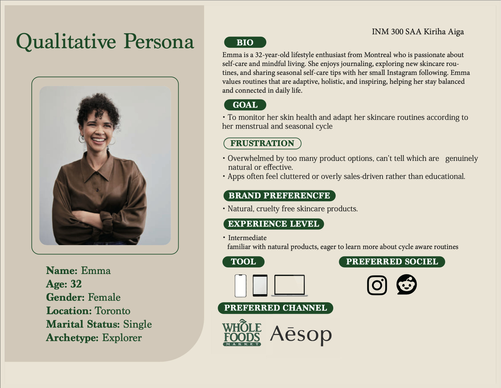
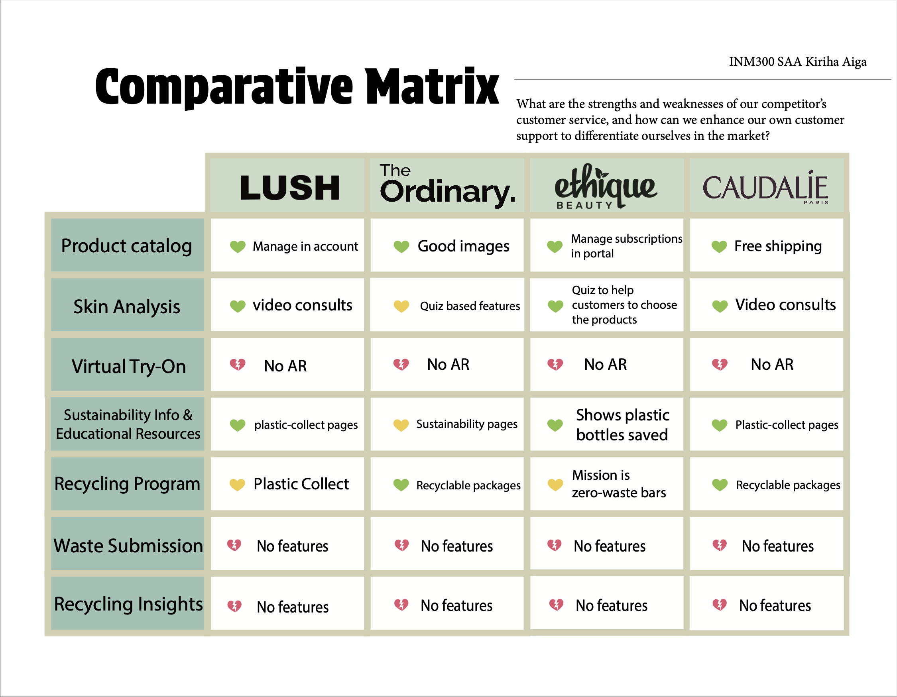

Information Architecture
Mapped out the app's information architecture to create a clear, intuitive navigation structure that helps users find what they need quickly.


Cycle-aware skincare UX app. Led the full UX lifecycle — persona research, information architecture, wireframes, and hi-fi HTML prototype.
Nature Cycle is a cycle-aware skincare app designed to help users align their skincare routines with their body's natural rhythms. The project covered the full UX lifecycle — from user research and persona creation through to a high-fidelity HTML prototype.
Conducted user research to understand skincare habits and pain points. Created detailed user personas to guide design decisions and ensure the app meets real user needs.


Mapped out the app's information architecture to create a clear, intuitive navigation structure that helps users find what they need quickly.